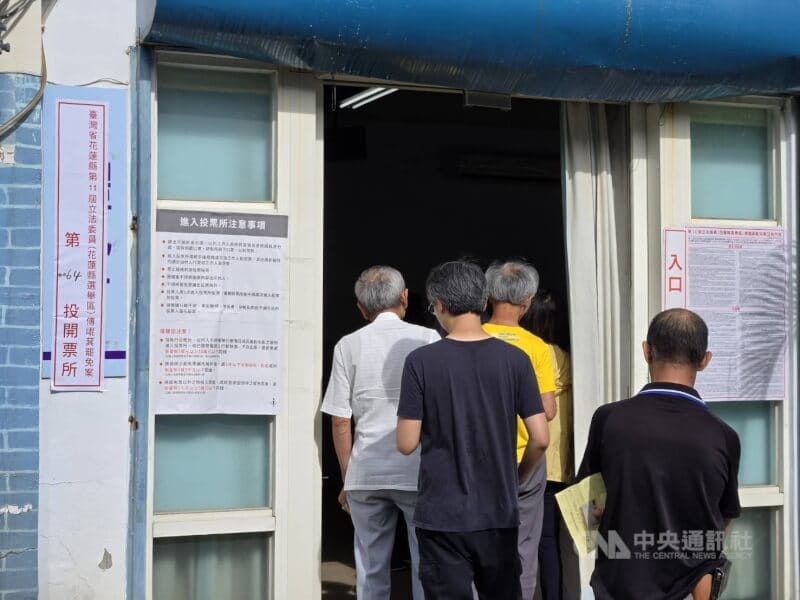

世界苦茶07月26日新闻 | 43条 | 台湾今日举行24名蓝委罢免投票

台湾今日举行24名蓝委罢免投票 | 台湾大法官人选再遭全数驳回 | 中越首次展开陆军联合训练 | 特斯拉自动驾驶在中国测评中拔得头筹 | 高端GPU走私业务大涨
今日三条新闻分析
苦茶数据
美元兑人民币：7.16（昨日7.15，前日7.14）
美元兑日元：147.72（昨日147.42，前日146.07）
上证指数：休市（昨日3593，前日3595）
标普500指数：休市（昨日6388，前日6363）
比特币：117583（昨日117216，前日119276）
布伦特原油：68.44（昨日69.53，前日68.80）
中国新闻
• 中越陆军开展联合训练 ：正在广西举行的中越首次陆军联合训练，双方参训官兵围绕无人机侦察、实弹射击、刺杀和拳术、伤员救护等课目展开训练。综合央视新闻和解放军南部战区微信公众号报道，中越“携手同行-2025”陆军联合训练目前正在广西举行。按照计划，双方参训官兵围绕无人机侦察、实弹射击等八个课目训练内容，在多个训练场地同步展开训练。实弹射击训练场上，中越双方参训队员结合各自射击动作、射击流程进行探讨交流，围绕基础射击内容组织联训。在无人机侦察训练场，双方使用无人机进行战场侦察，并通过使用飞行模拟软件进行操作训练，提升飞手操控能力。
• 中方批美涉疆指责 ：中国常驻联合国代表傅聪在安理会公开会发言时称，中方反对美国就涉疆问题提出无端指责，想借炒作涉疆议题干涉中国内政。据中国常驻联合国官网消息，傅聪当地时间星期四在联合国同伊斯兰合作组织合作问题安理会公开会上回应美国代表发言时，指中方对美国代表就涉疆问题的无端指责表示坚决反对、完全拒绝。他说，当前新疆社会稳定、经济繁荣发展、人民安居乐业，正处于历史上最好的发展时期。美国处心积虑炒作涉疆议题，妄图干涉中国内政、遏制中国发展，它的霸权本质、双标嘴脸暴露无遗。
• 驻韩使馆提醒防强制消费 ：中国驻韩国大使馆提醒赴韩团体游客警惕低价旅行团，谨防强制消费项目。中国驻韩国大使馆官方微信公众号星期五发文，提醒赴韩团体游客谨慎选择旅行社和旅游产品，警惕包含强制消费的不合理低价游，防止因强制购物陷入旅游纠纷，影响旅游体验和安全。通告称，数个旅游团向大使馆反映称，旅游途中遭遇强制消费，部分游客因不愿消费或消费额度不达标被中断行程。
• 辛巴卫生巾被检出致癌物 ：中国头部电商主播辛巴自创的卫生巾品牌被检出致癌物，30余人自曝患癌。《新京报》星期四报道，有消费者将辛巴自创品牌“棉密码”的卫生巾送检。检测报告显示，从2019年9月到2025年1月多批次、多品类的卫生巾产品检出超高含量硫脲。《新京报》获取的一份统计表显示，有30余名消费者自诉患有甲状腺癌，同时反馈其他接触硫脲的关联病症。这些患者均称长期使用“棉密码”卫生巾，并出示多年购买“棉密码”的订单截图。
• 多名高中生被骗至诈骗园区 ：因轻信“高薪兼职”，中国多名高中生被诱导前往境外诈骗园区，有人已失联长达两个月。其中一名18岁高中生已从缅甸电诈园区脱险，星期五平安回到中国。据央视新闻报道，6月23日失联的安徽庐江18岁高中生胡一啸，已从缅甸电诈园区脱险，星期五从云南普洱的勐啊口岸入境，平安回到中国。警方调查显示，胡一啸在失联后，先后途经安徽马鞍山、江苏南京、云南昆明，轨迹最终在云南西双版纳消失。
• 娄烨被控挪用资金发声反驳 ：中国大陆知名第六代导演娄烨，2024年凭借《一部未完成的电影》获得台湾金马奖最佳导演及最佳剧情片奖。他去年也受邀担任第35届新加坡国际电影节银幕大奖主竞赛的评审之一，举行了映后交流会，这部片子也夺得观众票选奖。近日，娄烨被电影公司指控利用职务之便，侵占并挪用投资资金，金额高达上千万元人民币。对此，他24日在社交平台发出声明，澄清一切控诉全是子虚乌有。娄烨执导的新片《三个字》，集结易烊千玺、秦昊、春夏、王传君、李现和章宇等人主演，开拍后福莱魔石影业发现账目混乱，指控娄烨涉嫌挪用和侵占资金，双方沟通无果后，便解除合作协议；娄烨也被解除所有职务，并于23日向北京朝阳警方报案。
• 港警通缉“香港议会”19人 ：香港警务处国家安全处宣布，悬红通缉涉嫌在海外筹建“香港议会”的19人。据香港政府公报，香港警务处国安处星期五公布悬红通缉19名在境外筹组、成立或参与一个名为“香港议会”的颠覆组织，涉嫌干犯《香港国安法》罪行的人士。法院已应警方申请，就这19名在逃人士发出拘捕令。这19人中，其中九人、七名男子袁弓夷、何良懋、霍嘉志、蔡明达、冯崇义、吴文昕和曾伟藩，以及两名女子陈丽珍与龚小夏，在香港境外组织“香港议会”选举，以成立“香港议会”，以及另外10人士、七名男子夏海俊、侯中宇、何永友、姜嘉伟、林千淦、黄振华和黄修和，以及三名女子张信燕、吴文君和钱宝芬作为候选人参与“香港议会”选举，并在当选后宣誓就任“香港议会议员”。
• 国务院部署推进免费幼教 ：7月25日的国务院常务会议，部署“逐步推行免费学前教育”有关举措。指导各地尽快细化工作方案，按照分担比例安排好补助资金，确保按时足额拨付。加强动态监测评估，科学核算办园成本，统筹好公办、民办幼儿园补助政策，做好家庭经济困难儿童、孤儿和残疾儿童等群体政策衔接和兜底保障。统筹考虑学龄人口变化、财力状况等因素，坚持保基本保普惠原则，进一步完善学前教育投入机制，加强基础设施建设，改善幼儿园教师待遇，提升办园质量水平。新闻稿没有透露政策的启动时点、出资标准等具体内容。 （翻评：这对生育率非常重要，但不觉得地方政府能花得起这个钱。）
亚太印太新闻
• 泰柬冲突加剧引民族主义 ：泰国与柬埔寨的边境军事冲突不只导致两国之间的紧张关系持续升温，也使泰国境内的民族主义情绪越来越炙热，已被迫停职的首相佩通坦和为泰党联合政府承受更大的压力。泰政府为了争取民意支持，不得不支持军方对柬采取行动，内外因素交错，形势堪忧。泰柬的军队周四在边境上爆发数十年来最激烈冲突后，泰国民族主义团体宣布星期天在曼谷举行反政府集会。支持泰国陆军和空军的贴文也在社媒平台X和脸书上广为流传。抗议活动领袖比七批评为泰党政府严重损害和危及国家安全的各个层面，包括国家荣誉、国家利益和公共资产，并导致公众信任和公共秩序荡然无存。 （翻评：军队和皇家在这情况下可以获得执政合法性，类似以色列的方式。）
• 泰国初步接受停火方案 ：泰国外交部星期五说，原则上同意马来西亚提出的泰柬边境停火方案，并将考虑这项计划，但须基于“适当的实地条件”。路透社报道，泰国外交部在X上的一篇帖子中表示：“必须指出的是，柬埔寨军队全天持续对泰国领土进行无差别攻击。柬埔寨的行动表明其缺乏诚意，并持续将平民置于危险之中。”
• 泰国边境八地实施戒严 ：泰国星期五宣布在与柬埔寨接壤的八个地区实行戒严，两国的边境冲突已进入第二天。法新社报道，庄他武里府和达叻府边境防御司令部司令阿皮查特在一份声明中说，庄他武里府的七个县和达叻府的一个县现已实施戒严，理由是“柬埔寨使用武力进入泰国领土”。泰国卫生部说，已有超过13万8000人从泰国边境地区撤离，冲突造成15人死亡，另有46人受伤，其中包括15名士兵。
• 柬称泰军使用集束弹药 ：柬埔寨排雷行动和援助受害者管理局发表声明说，泰国军队在柬埔寨境内的边境地区使用国际禁用的集束弹药。新华社引述管理局星期五发出的声明说，泰军在柬埔寨柏威夏省使用的集束弹药对平民、排雷人员和社区构成“直接且无差别”的威胁。“这一行为严重违反国际人道主义准则。”柬埔寨排雷行动和援助受害者管理局高级官员利图说，在平民居住的边境地区或附近使用集束弹药是不可接受的“升级行为”。“完全无视人类生命、人道主义原则和地区和平。”
• 泰拒绝第三国调解冲突 ：泰国外交部表明，泰国拒绝第三国为结束它与柬埔寨的持续冲突而做出的调解努力，坚持要求柬埔寨停止袭击，并仅通过双边会谈解决局势。泰国外交部发言人尼功德·巴兰库拉星期五告诉路透社，亚细安现任主席国马来西亚、中国和美国已提出要安排对话，但曼谷正在寻求通过双边途径解决冲突。尼功德在接受路透社采访时说：“我认为我们目前还不需要任何第三国的调解。”
• 印度校舍坍塌致7童亡 ：据印度媒体报道，印度西部拉贾斯坦邦一所学校建筑物屋顶星期五坍塌，已造成至少七名儿童死亡，26名儿童受伤。拉贾斯坦邦警官基肖尔告诉法新社：“目前已有七名儿童丧生，另有26人受伤。”新闻频道的视频显示，当地居民聚集在倒塌现场，当局使用起重机清理残骸。
• 以议员联署挺台参与国际 ：72名以色列议员签署支持台湾加入国际组织的联合声明后，中国驻以色列大使馆表示坚决反对并提出严正交涉，还指“这是民进党当局不择手段在国际上推进台独的又一例证”。据《耶路撒冷邮报》报道，来自执政联盟和反对党的72名以色列议员，星期四签署一份联合声明，谴责将台湾排除在国际组织之外是“不合理且不负责任的”。声明指出：“我们强烈反对将台湾排除在世界卫生组织、国际民航组织和《联合国气候变化框架公约》等组织之外，尤其考虑到台湾在冠病疫情等危机期间做出的重大贡献，在寻求解决方案和提供全球援助方面发挥了主导作用。”
• 柯文哲罢免投票诉求被驳 ：台湾在野的民众党前主席柯文哲声请罢免投票被驳回，民众党批评台北高等行政法院扼杀宪法赋予人民权利，让司法机关带头践踏人权。综合台湾联合新闻网、ETtoday新闻云等报道，柯文哲涉京华城弊案遭羁押禁见，无法参与星期六的大罢免投票，但表达投票意愿，因此在星期三委请律师提行政诉讼并声请假处分，希望能行使公民权利。台北高等行政法院星期四开庭调查，柯文哲委任的律师萧奕弘在庭上提出三种替代投票方案，即戒护投票、监所内投票和通讯投票，希望能让柯文哲顺利行使投票权。
• 台湾大法官提名再全数遭否 ：中华民国立法院7月25日表决司法院大法官人事案，赖清德提名的7人再次全部被否。其中，蔡秋明、苏素娥、萧文生、郑纯惠、林丽莹5人获得民进党全体支持，国民、民众党全体反对；陈慈阳、詹镇荣则仅获得民进党团51人中的26人支持。国民党团表示，虽然不少委员钦佩詹镇荣、萧文生的优异学术成就，但其在受质询“被问及有关国家政策是否违宪时，论述比较回避，需要不同角度追问才慢慢说出想法”，认为缺乏“对抗执政者的勇气”。民众党附和此说。民进党团表示，陈慈阳、詹镇荣的部分宪政观点背离民进党主张，因此总召柯建铭等部分委员自主投票反对。
• 台陆委会称大陆介入罢免 ：台湾政府的大陆委员会称，中国大陆非常严肃看待此次台湾大罢免行动，动员和介入力道不亚于总统大选。台湾将于星期六举行大罢免投票，涉及24名国民党立委及民众党籍新竹市长高虹安的去留，选区横跨台湾北、中、南、东部。民进党台北市议员洪健益星期三指称，为反制这场罢免行动，中国大陆东莞的统战单位推出优惠机票，鼓励台商及眷属在投票前返台。据台湾《联合报》报道，陆委会副主委、新闻发言人梁文杰星期四被问及此事时说，台湾海基会正与相关单位查证，初步了解是东莞台商协会工作人员以协会名义发出相关信息。
• 菲律宾暂停莎拉弹劾程序 ：菲律宾最高法院星期五宣布，由于弹劾程序违宪，将暂停针对副总统莎拉的弹劾程序。路透社报道，菲律宾众议院今年2月对莎拉提出弹劾，指控她滥用公款、聚敛巨额财富，并威胁要杀害总统小马可斯、第一夫人和众议院议长。法院说，不会免除莎拉的指控。
科技新闻
• 特斯拉机器人目标远未达成 ：特斯拉曾承诺今年生产5000台Optimus机器人，然而今年已经过去了近八个月，特斯拉远远未达到该目标，产量仅有数百台。在此之前，特斯拉公布今年第二季度总收入下降12%，原因是电动汽车销量下降、来自监管积分的收入减少以及光伏和储能业务销售额下降。马斯克在本周早些时候的财报电话会议上表示，特斯拉将于明年年初开始生产最新的Optimus 3版本。“我们会尽最大努力加快 Optimus 生产的步伐，争取尽快实现年产 100 万台的目标。我们认为五年内能够实现这一目标，这是一个合理的愿景。”
• 特斯拉车型测评中拔头筹 ：特斯拉两款车型在中国汽车媒体懂车帝的测评中通过率最高，创始人马斯克转发该消息。马斯克星期五在社交平台X上转发了懂车帝的一条视频，并配文称：“由于法律禁止数据出境，特斯拉在没有本地训练数据的情况下，在中国取得了最高成绩。”懂车帝《懂车智炼场》栏目选取市场上热门畅销、配备辅助驾驶功能的20多个品牌36款车型，设置“高速事故场景模拟”“施工路遇卡车”等六个场景进行模拟测试。
• Meta退出欧盟政治广告市场 ：Meta平台公司将停止在欧盟销售政治和议题广告，原因是该公司认为新法规造成了无法承受的复杂性和法律不确定性。根据周五发布的一篇博客文章，该公司将从十月初开始在欧盟解散其政治广告业务。该公司援引了关于政治广告透明度和定向的新规，这些规定将于十月份生效，并限制可用于向个人投放政治信息的数据。Meta在其博客文章中写道，在该法规最终确定前，公司就此问题与政策制定者进行了广泛接触，但这些规则将有效地将流行产品和服务从市场上移除，减少选择和竞争。Alphabet旗下的谷歌也于去年年底宣布将停止在欧盟销售政治广告。
• 英国约有6000个色情网站开始检查年龄： 据媒体监管机构英国通讯管理局称，英国约有6000个允许色情内容的网站将从周五开始检查用户是否年满18岁。其首席执行官梅拉妮·道斯女士表示，我们开始看到科技行业不仅仅是口头上的承诺，而是采取了实际行动来改善儿童的网络安全。她在BBC广播四台的《今日节目》中表示，没有其他国家能够实现这样的措施，也没有像包括埃隆·马斯克旗下 X 平台在内的这么多平台承诺进行年龄验证。但BBC了解到，截至周五早上，至少有一家在英国运营的大型色情网站似乎并未要求进行年龄验证。英国通信管理局周四表示，包括Discord、X、Bluesky和Grindr在内的更多平台已同意引入年龄验证。
财经新闻
• 意法半导体收购传感器业务 ：意法半导体宣布，将以高达9亿5000万美元收购荷兰恩智浦半导体的部分传感器业务。这次拟收购的传感器业务主要聚焦于汽车安全传感器，如用于安全气囊和车辆动态控制的传感器，以及发动机管理等监测用传感器。同时，也涵盖用于工业应用的压力传感器和加速度计。公司在文告中说，恩智浦传感器业务2024年的营收约为3亿美元，毛利率和营业利润率都将为意法半导体带来“显著增长”。预计这次交易完成后，意法半导体的每股收益也将有所提升。
• 欧盟冯德莱恩拟促美协定 ：欧盟委员会主席冯德莱恩星期天将前往苏格兰与美国总统特朗普会面，力争在8月1日对等关税生效前与美国达成贸易协议。特朗普说，双方达成协议的概率“一半一半”。经过数月的穿梭外交，过去一周双方集中全力推动一项将在大部分欧盟商品关税统一在15%的协议。若欧盟无法在8月1日前与美国达成贸易协议，欧盟产品将面临美国的30%关税。彭博社此前报道，预计欧盟航空业、部分医疗设备和仿制药、几种烈酒，以及美国所需的一套特定制造设备将获得有限的关税豁免。
• 碧桂园同意重组关键条款 ：中国房地产开发商碧桂园已同意一项由银行债权人提出的关键重组条款，为债务重组扫清重要障碍，预料年底前可完成整个重组计划。综合彭博社和澎湃新闻报道，碧桂园已与一个由债券持有人组成的特设小组达成协议，愿意向银行协调委员会支付1.78亿美元补偿款，以换取债权人归还被扣押的抵押品，推动重组进程。根据协议条款，这笔补偿款中有一半将在重组生效日以现金支付，另一半则通过两年期抵押贷款方式偿还。
• 摩根士丹利发熊猫债 ：摩根士丹利成为首家进入中国熊猫债市场的美国企业，发行规模20亿元人民币。彭博社引述知情人士报道，摩根士丹利旗下投资管理部门已在星期四完成五年期熊猫债定价，票面利率为1.98%，比同类人民币公司债平均收益率高出约五个基点。根据彭博汇编数据，这是有记录以来首家发行熊猫债的美国公司。知情人士指出，发行所得资金将汇出中国，主要用于支持摩根士丹利的境外业务，包括离岸人民币业务。
• 特朗普批鲍威尔促降息 ：美国总统特朗普罕见地造访联邦储备理事会，其间与联邦储备局主席鲍威尔起争执。特朗普批评美联储总部两座历史建筑的翻修成本高昂，并极力主张降低利率。特朗普本周曾称鲍威尔为“笨蛋”，因为他没有听从白宫大幅降低借贷成本的要求。他指鲍威尔在降息决策上“反应太慢”。特朗普造访联邦储备理事会的时机正值他的政府加大力道批评鲍威尔，指责他推动预算爆表的整修工程。然而，特朗普星期四在视察美联储位于华盛顿耗资25亿美元的大楼项目时说，他无意解雇鲍威尔。特朗普告诉记者说：“我们的国家必须要降息……民众几乎不能买房，因为利率太高了。”
• 鸿海软银合资项目获批 ：中国大陆官方已无条件批准台湾鸿海集团与日本软银海外公司在美国设立合营企业。中国国家市场监督管理总局星期四发布公告，宣布无条件批准鸿海精密工业股份有限公司与日本软银集团海外公司新设合营企业的申请。据IT之家报道，鸿海与软银海外公司今年4月签署协议，计划在美国成立一家合营公司，从事服务器及预制模组化数据中心的制造与供应。
• 高端GPU维修兴起或涉走私 ：美国政府出口禁令之下，英伟达高端晶片维修业务在华兴盛，显示大量受管制晶片可能通过走私流入中国。据路透社报道，深圳有近十家小型企业为英伟达H100与A100图形处理器提供维修服务。尽管这些晶片被禁止出口至中国，仍通过第三国大量流入市场。业内人士透露，自2024年底起，AI晶片维修需求激增。他们成立新公司专攻此项业务，每月维修的晶片多达500枚。维修内容包括软件测试、风扇、电路板与内存故障检测和零件更换等，收费约为每枚1万人民币至2万元。
• 韩国对中日钢品征税 ：韩国官方通报，将向中国和日本热轧钢板等商品征收临时反倾销税。据韩联社报道，韩国产业通商资源部贸易委员会星期四召开会议，决定对中日两国进口热轧钢板，以及中国进口单模光纤征收临时反倾销税。韩国产业部贸易委在当天的会议审议并通过包括上述内容的四个反倾销案。贸易委从3月起对自中日两国进口碳钢及其他热轧合金钢厚板、中国进口单模光纤进行初步反倾销调查，并初步裁定相关倾销行为对韩国国内相关产业造成了实质性损害。
• 京东拟收购德国零售商 ：中国电商巨头京东集团正与德国消费电子产品零售商Ceconomy AG就收购事宜进行深入谈判，这项交易对Ceconomy的估值或约22亿欧元。根据Ceconomy星期四发布的声明，京东正考虑以每股4.60欧元现金收购Ceconomy股份，证实了彭博社此前的报道。潜在的收购报价每股4.17欧元，较Ceconomy星期三收盘价3.75欧元溢价23%。声明称，双方目前尚未签署任何具有约束力的协议，且不确定会否提出正式收购献议。
• 东京CPI放缓石破承压 ：受一些暂时性因素影响，东京生活费压力连续第二个月放缓，不过食品通货膨胀依然居高不下，这令在星期天参议院选举中遭遇历史性挫败的日本首相石破茂继续承受压力。彭博社引述日本政府星期五公布的数据说，东京7月份剔除生鲜食品的核心消费者价格指数同比上涨2.9%，低于6月份的3.1%，涨幅自3月以来首次回落至3%下方。经济师此前预计该核心CPI涨幅将放缓至3%，因为东京政府夏季减免部分水费以及能源价格回落料对通胀构成下行压力。
俄乌战争
• 普京称峰会应为最终步骤 ：克里姆林宫星期五说，俄罗斯总统普京与乌克兰总统泽连斯基举行峰会，只能作为达成和平协议的最后一步。路透社报道，克里姆林宫发言人佩斯科夫表示，两国领导人会晤不太可能像乌克兰提议的那样在8月底前举行。佩斯科夫告诉记者：“峰会能够也应该为达成和解方案敲定最终定论，并巩固专家们制定的方案和协议。反过来则不可能。”
• 乌总统称回应反腐抗议 ：乌克兰总统泽连斯基说，其政府在反腐败法争议问题上的转变，是对反对这项立法的抗议活动的“充分回应”。法新社报道，乌克兰议会近期通过一项法案，规定由总统委任的总检察长有权对国家反腐败局和反腐败专门检察官办公室的调查工作下达指示。这引发了自俄罗斯入侵以来乌克兰最大规模的公众抗议。抗议活动结束后，政府提交一项新的法案，旨在恢复这两个机构的独立性。
• 俄客机因压力系统折返 ：一架由S7航空公司运营的俄罗斯客机星期五返回西伯利亚新西伯利亚机场检查客舱压力系统，随后再次起飞并安全着陆。路透社报道，S7航空公司星期五在一份声明中说，这架飞往俄罗斯南部城市索契的飞机被迫返回出发机场“检查客舱压力控制系统”。
• 乌获三套爱国者导弹系统 ：乌克兰总统泽连斯基星期四说，盟友已经向乌克兰确认，他们将提供三套“爱国者”导弹防御系统，并正就再采购七套系统进行磋商。路透社报道，他告诉记者：“我已正式收到确认，德国将提供两套系统，以及挪威将提供一套系统。我们还在与荷兰合作。”美国总统特朗普本月早些时候宣布，美国将向乌克兰提供数十亿美元的武器，其中包括爱国者导弹。
• 俄航母或将报废或出售 ：当地时间25日，俄罗斯联合造船集团董事会主席克斯京表示，“库兹涅佐夫海军元帅” 号航空母舰已经没有维修价值。这艘航母已服役40多年，维修费用极其高昂，最终解决方案要么是出售，要么是报废。该航母于1985年下水，1991 年服役。这艘航母 2017 年起停靠俄北部摩尔曼斯克州的港口，接受全面维修和升级改造，其间出过几次事故。2018年10月，航母的浮动船坞沉没，导致一台吊车砸中甲板，留下一个大约5米长、4米宽的洞。2019年12月，该航母发生火灾，造成1死12伤，据称是焊接作业引发了火灾。
国际新闻
• 2023年，海洋达到了前所未有的沸点，海洋热浪覆盖了地球96%的海洋表面，持续时间是历史平均水平的四倍，科学家称之为前所未有的事件： 2023年，海洋温度飙升至历史最高水平，海洋热浪——长时间异常温暖的海水——打破了强度、持续时间和全球覆盖范围的记录。研究人员在周四发表于《科学》杂志的一项研究中指出，这些极端事件可能不仅仅是全球变暖的又一个里程碑。在中国和美国机构的科学家的带领下，研究人员提出了2023年的海洋热浪可能标志着海洋与大气相互作用方式的根本性转变的可能性。这些研究结果提供了迄今为止最全面的视角，回顾了大片海洋温度升高到危险水平、威胁海洋生物和扰乱全球气候的一年。与陆地热浪不同，海洋热浪发展缓慢，可以持续数月甚至数年。占据新闻头条的北大西洋事件始于2022年中期，持续了525天。在西南太平洋，海洋热浪打破了地理范围和持续时间的历史记录。
• 加沙停火谈判拟重启 ：埃及媒体星期五引述消息人士的话称，预计加沙停火谈判将于下周恢复。路透社报道，埃及开罗新闻称，以色列代表团在总理内坦亚胡召回谈判小组进行磋商后的第二天离开。他们将研究哈马斯的回应。美国也于星期四召回其代表团进行磋商，美国特使维特科夫指责哈马斯未能在谈判中秉持诚意。
• 以色列将允空投援助加沙 ：以色列军方电台引述一名军方官员的话称，以色列将从星期五开始允许外国向加沙空投援助物资。路透社报道，以色列军方发言人没有立即回应置评请求。加沙卫生部称，自以色列3月份切断对巴勒斯坦的供给以来，这个地区已有100多人死于饥饿。
• 伊朗将续谈核协议 ：伊朗说，在星期五进行了“严肃、坦诚和详细”的会谈后，将继续与欧洲大国进行核谈判。路透社报道，欧盟代表团以及由法国、英国和德国组成的E3集团与伊朗进行约四个小时的会谈。伊朗外交部副部长加里巴巴迪随后说，双方就解除制裁和核问题提出具体想法。
• 英国仍盼最终承认巴国 ：英国内阁部长星期五说，英国支持最终承认巴勒斯坦国，但当务之急应是减轻加沙地带的苦难，并确保以色列与哈马斯之间停火。路透社报道，历届英国政府都说，将在适当的时候正式承认巴勒斯坦国，但从未设定时间表或具体说明实现这一目标的条件。英国科技部长凯尔告诉天空新闻：“我们希望巴勒斯坦建国，我们渴望实现这一目标，我们希望确保能够实现这一长期政治解决方案，并拥有发展空间。 （翻评：两国方案确实是解决巴以问题最好的方法。）